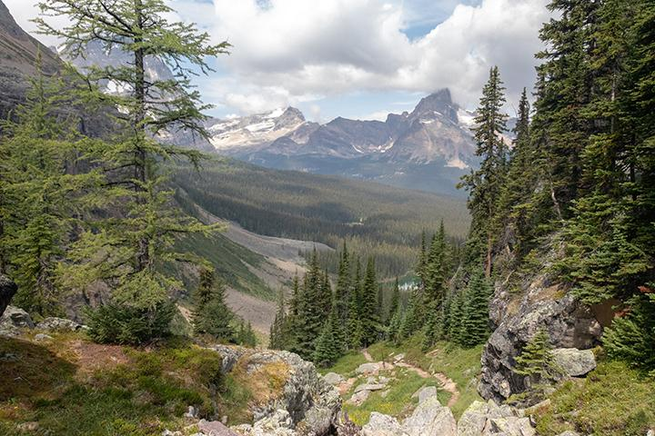

Today’s Agenda
Section 1: What is the “Environment”?
Conceptualizing “wilderness”
Setting up the first paper
Justin Leinaweaver (Fall 2025)
Springfield Conservation Nature Center
Thursday (Aug 28)
9:35a - 10:35a

What is “the environment”?
- e.g. “nature” or “wilderness”
What is central argument in this prologue?
Wilderness is an evolving, subjective “quality” NOT an object we can simply identify
Nash’s (2014) Argument
The origination and use of “wilderness” as a label differed across cultures
The meaning of wilderness has evolved over time
No single classification of wilderness accepted broadly
Therefore, wilderness is an evolving, subjective “quality” NOT an object we can simply identify
Nash’s (2014) Argument
The origination and use of “wilderness” as a label differed across cultures
Lost, unruly, disordered (Old Swedish describe boiling water)
Creatures not controlled by man (“wild-deor-ness”)
Places that make us wild (“bewilder”)
The meaning of wilderness has evolved over time
No single classification of wilderness accepted broadly
Therefore, wilderness is an evolving, subjective “quality” NOT an object we can simply identify
Nash’s (2014) Argument
The origination and use of “wilderness” as a label differed across cultures
Lost, unruly, disordered (Old Swedish describe boiling water)
Creatures not controlled by man (“wild-deor-ness”)
Places that make us wild (“bewilder”)
The meaning of wilderness has evolved over time
Bible: A treeless wasteland; a desert
Dictionaries Today: Undeveloped lands
No single classification of wilderness accepted broadly
Therefore, wilderness is an evolving, subjective “quality” NOT an object we can simply identify
A Spectrum of Environments
A Spectrum of Environments


Paper 1: The Importance of Wilderness
Make an argument that the wilderness is important to our community
- Due next Friday (Sep 5th)
Paper 1: The Importance of Wilderness
An argument paper MUST:
Be organized around a single, clear thesis
Include multiple premises
Provide high quality evidence for all claims of fact
Five Paragraph Argument Paper
Introduction Paragraph
Body Paragraph: Reason 1 (premise)
Body Paragraph: Reason 2 (premise)
Body Paragraph: Reason 3 (premise)
Conclusion Paragraph
A “Good” Introduction Paragraph
What is the question?
Why do we care about the question?
Thesis statement
Paper 1: The Importance of Wilderness
Make an argument that the wilderness is important to our community
- Due next Friday (Sep 5th)
Share a Wilderness Experience

For Next Class
Get those papers done (for next week), and
Meet at the Nature Center on Thursday